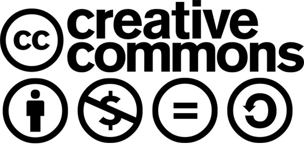
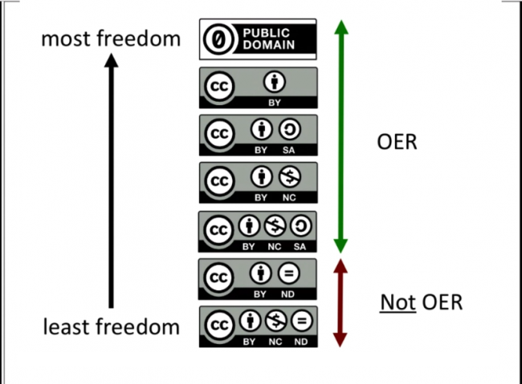
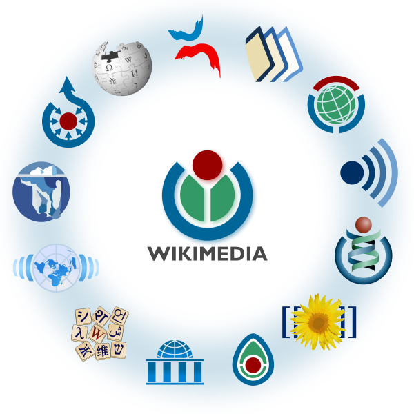
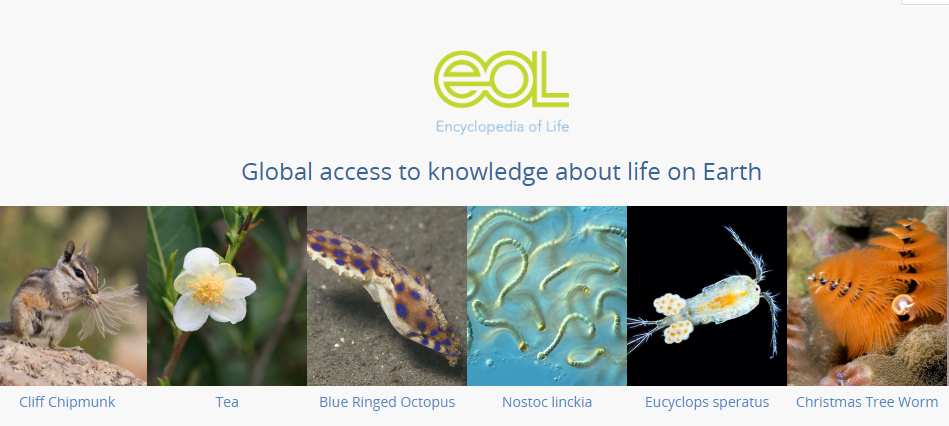
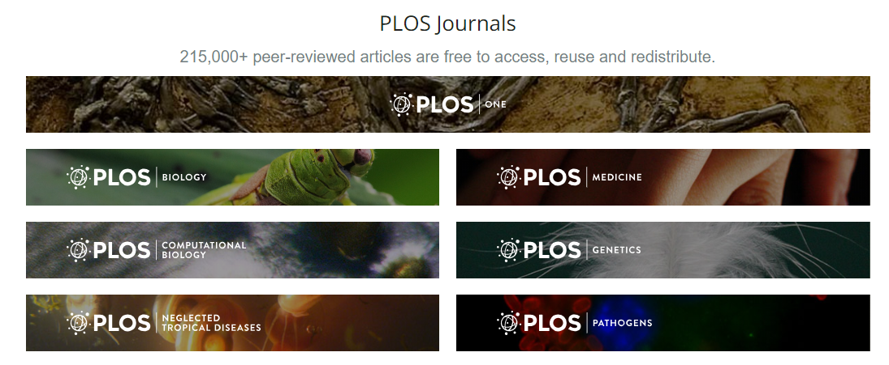

Sumber Pembelajaran Terbuka Sebagai Salah Satu Bidang Penerapan Lisensi CC
Sumber pembelajaran kini tersedia dengan banyak ragam mulai dari buku teks cetak ke buku digital, gambar, video, infografik, permainan video, dan media lainya. Seiring berkembangnya teknologi internet, sumber pembelajaran tersebut kini dapat dengan mudah diakses secara daring agar persebarannya semakin luas dan cepat. Tidak hanya itu, biaya produksi dan distribusi pun dapat berkurang. Namun tidak semua sumber pembelajaran yang ada di dunia maya dapat diakses dengan cuma-cuma. Beberapa penyedia sumber pembelajaran, membebankan biaya kepada pengguna jika ingin mengakses sumber pendidikan tersebut.
Di sisi lain, kini makin banyak orang yang berbagi ilmu dengan membuat sumber pembelajaran yang dapat diakses secara daring dan gratis. Bahkan mereka mengajak pembuat bahan ajar yang lain untuk turut serta mengembangkan sumber pembelajaran tersebut dan mengizinkan penggunanya untuk menggunakan dan menyebarkan kembali dengan izin langsung oleh penciptanya yang tertera pada suatu ketentuan lisensi agar terdapat kepastian hukum. Karena pada hakikatnya hak untuk mendapatkan ilmu pengetahuan merupakan hak setiap orang. Sumber pembelajaran tersebut dinamakan sumber pembelajaran terbuka atau Open Educational Resource (OER) dalam bahasa Inggrisnya.
Open Educational Resource (OER)

{kind=link}
OER adalah sebuah istilah yang disepakati oleh berbagai organisasi. UNESCO salah satu organisasi internasional yang turut serta memberikan definisi mengenai OER yakni: Materi ajar atau hasil penelitian yang tersedia dalam berbagi media secara terbuka (menerapkan lisensi terbuka) dan bebas biaya untuk diakses, digunakan kembali atau diadaptasi, dan disebarkan kembali oleh penggunanya dapat disebut sebagai OER. OER biasanya berupa buku teks, kurikulum, silabus, catatan, contoh penugasan, contoh tes yang disediakan dalam format audio, video tutorial maupun animasi.
OER sebaiknya dianjurkan menganut prinsip 5R yaitu:
1. Retain: Dapat diakses untuk diunduh.
2. Reuse: Dapat digunakan kembali.
3. Revise: Dapat diubah untuk diperbaiki atau dikembangkan.
4. Remix: Dapat dimodifikasi, diadaptasikan dan digunakan dengan bahan-bahan lain atau dibuat turunannya.
5. Redistribute: Dapat digandakan dan disebarluaskan.
Prinsip 5R di atas menerangkan bahwa penerapan lisensi terbuka juga termasuk sebagai persyaratan penyediaan OER. Lisensi yang lazim diterapkan pada OER ialah lisensi Creative Commons (lisensi CC). Lisensi CC dapat menjadi dasar legal penciptaan, penggunaan, penyebaran, pengumuman, pengubahan, dan penggubahan konten OER bagi pencipta maupun penggunanya.
Lisensi Terbuka Creative Commons
Lisensi terbuka yakni lisensi yang menganut prinsip “Some Right Reserved” atau beberapa hak dipertahankan. Dengan menerapkan lisensi terbuka seperti Creative Commons (CC). Paling tidak pengguna secara legal dapat menggunakan dan menyebarkan kembali ciptaan. Dengan izin langsung oleh penciptanya yang tertera pada suatu ketentuan lisensi agar terdapat kepastian hukum. Penerapan lisensi CC pada OER dapat memudahkan segala aktivitas pembuatan atau pengembangan OER.

Untuk mengenal lisensi CC, pertama-tama perlu diketahui 4 ketentuan lisensi CC yakni:
- Atribusi (BY)

Ketentuan ini berfungsi sebagai pembebanan kewajiban terhadap pengguna ciptaan untuk mencantumkan nama yang sesuai, mencantumkan tautan terhadap lisensi, dan menyatakan perubahan yang dibuat jika ada. Pengguna ciptaan dapat menerapkan atribusi yang sesuai dengan informasi yang tersedia pada ciptaan yang dibagikan. Ingat , pemberian izin penggunaan konten kepada Anda bukan berarti pencipta mendukung tujuan penggunaan Anda, jadi hal ini bukan merupakan pernyataan dukungan.
- BerbagiSerupa (SA)

Ketentuan ini hanya berlaku ketika ciptaan diubah, digubah, dan dibuat turunannya. Hasil perubahan, penggubahan, atau ciptaan turunan yang dibuat wajib menerapkan lisensi yang sama apabila materi asli menerapkan ketentuan ini.
- NonKomersial (NC)

Ketentuan ini melarang pengguna ciptaan dalam menggunakan ciptaan untuk kepentingan komersial.
- TanpaTurunan (ND)

Ketentuan ini melarang pengguna ciptaan untuk mengumumkan setiap hasil pengubahan, penggubahan atau pembuatan ciptaan turunan dari ciptaan.
Empat ketentuan tersebut tersedia 6 pilihan lisensi CC yang diterapkan oleh pencipta pada ciptaanya. Keenam pilihan lisensinya yakni Creative Commons Atribusi (CC BY), Creative Commons Atribusi BerbagiSerupa (CC-BY SA), Creative Commons Atribusi NonKomersial (CC-BY-NC), Creative Commons Atribusi TanpaTurunan (CC-BY-ND), seperti Creative Commons Atribusi NonKomersial BerbagiSerupa (CC-BY-NC-SA),Creative Commons Atribusi NonKomersial TanpaTurunan (CC-BY-NC-ND).
Pilihan lisensi CC yang tidak disarankan pada materi OER

Dari keenam ragam pilihan lisensi CC, hanya dua pilihan lisensi yakni CC-BY-ND dan CC-BY-NC-ND tidak disarankan. Karena spektrum ND atau tanpa turunan dapat menutup peluang orang lain untuk mengembangkan kembali konten OER tersebut.
OER Sebagai Gerakan
Gerakan OER merupakan sebuah gerakan berlandaskan pada perwujudan pemenuhan hak asasi manusia dalam mengakses pendidikan yang berkualitas. Gerakan ini muncul karena adanya kepedulian yang sama oleh pemerhati pendidikan dari berbagai kalangan dan negara akan tingginya biaya untuk mengakses atau mendapatkan pendidikan. Mereka berkumpul dalam kongres yang khsusus membahas OER. Tercatat sudah tersengelara dua kongres tingkat dunia yakni di Paris tahun 2012 yang mempertemukan kalangan pemerintahan, pakar OER, NGO, dan pendidik dari seluruh dunia untuk berdiskusi dan berbagi mengenai contoh terbaik dari kebijakan dan insisiatif OER. Kedua di Slovenia 2017 yang mengangkat tema “OER untuk Pendidikan yang Inklusif dan Berkeadilan: dari Komitmen ke Pelaksanaan”. Hasil kongres ini, diadaptasi oleh para delegasi dalam rencana kerja di negara atau organisasi masing-masing.
Penerapan Lisensi CC pada OER
Selain pengadaptasian OER pada kebijakan publik, terdapat juga platform-platform OER yang menerapan lisensi CC. Beberapa diantaranya yakni:
1. Wikimedia

{kind=link}
Sebagai organisasi nirlaba bersekala global, Wikimedia mempunyai misi untuk membebaskan konten pendidikan ke seluruh dunia. Melalui berbagai macam proyek, Wikmedia mengajak siapa saja untuk berkontribusi dan berbagi pengetahuan. Adapun proyek-proyek Wikimedia yakni: Wikipedia, Wikionary, Wikiquote, Wikibooks, Wikisource,Wikimedia Commons dan lain-lainya.
2. Open Educational Resources Commons (OER Commons)

OER Commons merupakan perpustakaan daring bebas akses yang memungkinkan para guru dan pengguna lainya untuk mencari dan menemukan materi sumber pembelajaran terbuka dan bahan ajar lainya secara gratis. Saat ini terhitung tersedia 30.000 materi dengan lebih dari 120 akun pembuat konten.
3. Encyclopedia of Life (EoL)

EoL menyediakan ensiklopedia kolaboratif daring yang menyediakan akses global terhadap ilmu pengetahuan tentang kehidupan bilologis di muka bumi.
4. Public Library of Science (PLOS)

PLoS adalah sebuah organisasi dan advokat nirlaba yang berupaya agar literatur ilmiah yakni sains dan kedokteran dapat tersedia bebas sebagai sumber pengetahuan bersama.

School of Open merupakan sekolah yang menawarkan kesempatan pendidikan gratis untuk siapa saja yang ingin belajar mengenai arti dan dampak dari lisensi dan sumber terbuka, Open Policy Network adalah koalisi para ahli yang bekerja untuk mendorong pembuatan, adopsi, dan penerapan kebijakan dan praktik terbuka yang memajukan kepentingan publik.

StoryWeaver repisitori digital dari multibahasa cerita anak yang digagas oleh Pratham Books. Platform ini memungkinkan Anda untuk membaca, menyumbangkan cerita karangan Anda sendiri, menerjemahkan cerita ke dalam berbagai bahasa dan juga membagikan cerita tersebut.
OER di Indonesia

Wikipedia merupakan ensiklopedia multibahasa yang dapat disunting, disalin dan disebarkan secara bebas oleh siapa saja. Hinga saat ini terhitung sebanyak 988.77 orang sukarelawan yang telah mencoba menyunting dan menciptakan 438.444 artikel dalam bahasa Indonesia. Seluruh artikel di Wikipedia menerapkan lisensi CC BY SA
2. Sumber Pembelajaran Terbuka Universitas Terbuka ( SUAKA-UT)

SUAKA-UT merupakan Open Educational Resources (OER), yaitu salah satu layanan UT dalam menyediakan materi pembelajaran yang dapat diakses secara gratis oleh masyarakat umum. Materi pembelajaran dalam bentuk siaran TV (UT TV) yang, siaran radio (UT Radio) yang ditransmisikan ke internet, perpustakaan digital, layanan guru pintar (GPO) yakni portal untuk para guru di seluruh Indonesia agar dapat mengakses sumber belajar dengan cepat dan mudah dan juga UT open courseware. Materi-materi tersebut berlisensi Creative Commons CC BY-NC-SA dan dibuat oleh para dosen baik secara individu ataupun tim.
3. Open Educational Resource Unsiyah /OER Unsiyah

OER Unsiyah merupakan hasil kerja sama antara perpustakaan Unsiyah dan UKM literasi Unsiyah. Portal ini menyimpan berbagai bentuk materi pembelajaran seperti audio, video, buku dan poster elektronik yang berlisensi CC. Saat ini terhitung terdapat 1097 berkas yang ada pada portal OER Unsiyah yang berasal dari kontributor ataupun dari situs web yang menyediakan materi OER dan menerapkan lisensi Creative Commons seperti https://www.e-ir.info/, http://oapen.org/content/about-rights, dll.
Sebagai penutup, untuk turut serta dalam menambah jumlah materi OER dapat dilakukan secara perorangan dengan berkontribusi pada platform yang menyediakan fitur untuk berkontribusi seperti platform-platform OER lainya atau yang telah disebutkan di atas. Dan Anda dapat juga bersama-sama menginisiasi pembuatan platform OER sendiri sesuai dengan kebutuhan materi pembelajaran yang dibutuhkan. Karena semakin banyak platform yang menyediakan materi pembelajaran terbuka, maka semakin berkurang ketimpangan dalam mengakses dan mendapatkan materi pembelajaran.
Ketimpangan materi pembelajaran masih menjadi masalah utama di ranah pendidikan di Indonesia. Luasnya wilayah Indonesia dan mahalnya biaya cetak buku serta biaya pengiriman buku ke seluruh penjuru di Indonesia menjadi salah satu penyebabnya. Dengan mengadaptasi sistem OER secara masif di Indonesia serta didukung dengan infastruktur internet yang memadai, hal itu dapat menjadi salah satu solusi dalam mengurangi beban biaya cetak dan pengiriman buku sehingga ketimpangan materi pembelajaran di Indonesia berkurang.
Tags:
Oleh:
17 Dec 2018Kategori:
Berita Terbaru
- Lokakarya Hak Cipta dan Lisensi Creative Commons di Pekanbaru
- Pengumuman Resmi: Hasil Akhir Training of Trainers Creative Commons Indonesia
- Literatur tentang Model Bisnis Terbuka "Made With CC"
- Data dan Artikel Ilmiah Terbuka dari PLOS!
- Konten Format Model 3 Dimensi Berilsensi CC di Platform Sketchfab